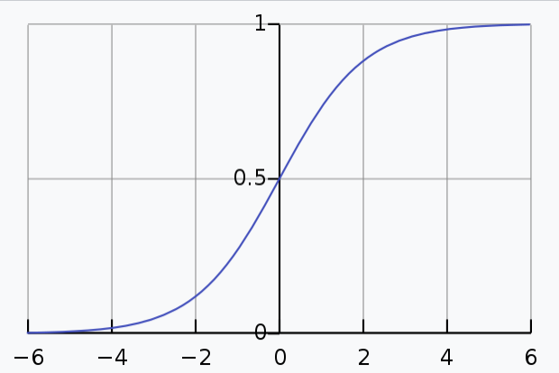
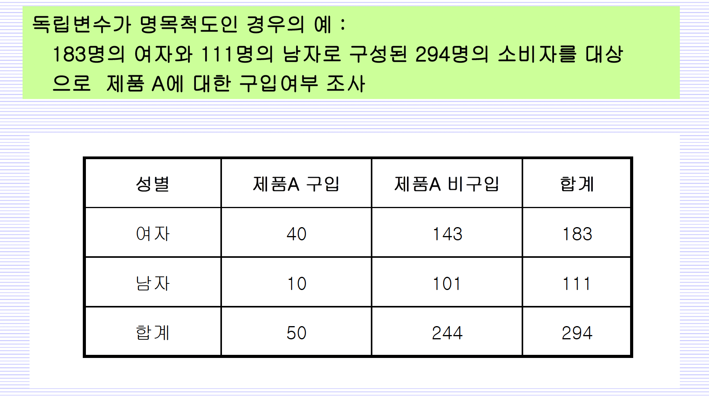
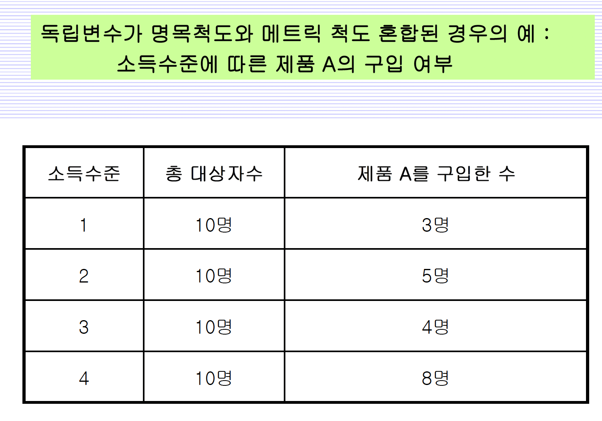

# odds와 logit 만들기
p=seq(0.01,0.99,0.01)
odds=p/(1-p)
ln_odds=log(p/(1-p))Ch23 - Logistic Regression Practice
로지스틱 회귀분석이란?
Note
자료가 두 모집단으로 나누어진 상황에서 , 어떠한 모집단에 속하는지를 예측하는 분류 목적으로 사용되는 통계적 분석방법이다. 로지스틱 회귀분석의 결과를 통해 어느 집단에 속할 확률을 구할 수 있다.
분류값 cut-off
로지스틱 회귀모형이 제시하는 확률은 판단 기준을 통해 활용될 것이다.
예를 들어, 제품 구입 여부의 cut-off값(분류값)을 50%라 한다면, 로지스틱 회귀모형에 의해 확률이 0.5 이상인 고객에게만 집중적으로 마케팅하는 판단을 내릴 것이다.
분류값은 잘못되었을 경우와 수익에 따라 결정된다.
예를 들어, 은행에서 고객에게 대출하는 경우 10% 확률로 모든(100%) 대출금을 잃는 다(잘못되었을 경우)고 가정하자. 대출금을 갚을 확률이 90%인 고객에게 10% 이자를 받도록 하면(수익) 은행은 잃지 않는 거래를 하게 될 것이다. 이 경우 은행은 분류값을 90%로 설정하고 영업을 할 것이다.
(예를 들어, 100명의 고객에게 대출금을 모두 1백만원씩 빌려줬다고 가정하자. 90% 고객인 90명 고객은 대출금을 모두 갚고 이자로 10만원씩 줄 것이므로 900만원의 이익이 생긴다. 그러나 10% 고객 10명은 대출금을 갚지 못하므로 은행은 900만원을 잃게 된다. 그러므로 결국 은행은 이익도 손해도 보지 않는다.)
분류값은 로지스틱 회귀모형에서 절편항과 관련있다.(이후 설명 나옴)
generalized linear model로서 선형은 아니지만 잘 변형하여 선형으로 만들 수 있다.
Note
R에서의 일반화된 선형 모형glm(y~x,family = "binomial")
binomial은 이항분포에 사용하는 옵션이다.
이항분포는 다음과 같다. \(X \sim B(n,p)\)
로지스틱은 robust하며 기본적인 분류 모형(classification model)으로 현재 성능이 좋다고 알려진 분류모형인 랜덤포레스트 모델, DNN(Depp Neural Network)와 밀접한 관련을 갖고 있다.
예측변수(predictor)가 명목, 서열척도여도 더미변수를 이용하여 로지스틱 회귀분석이 가능하며 메트릭 척도를 갖는 경우에도 사용 가능하다.
generalized linear model
\[ln(odds(p)) = ln \frac{p}{1-p} = \alpha + \beta_1x_1 + \beta_2x_2 + \cdots+ \beta_px_p = logit(p)\]
이때 선형회귀모형과 달리 \(\epsilon\)이 없는 이유는 \(p\)가 확률로서 상수이기 때문이다. 분포를 갖고 있는 확률 변수가 아니기 때문에 오차항이 존재하지 않는다.
위 식을 p에 대해 풀면 아래와 같다.
\[p = \frac{1}{1+exp[-(\alpha+\beta_1x_1 + \beta_2x_2 + \cdots+ \beta_px_p)]}\]
Important
\(logit(p)\)(로지스틱 함수 - S자 모양 함수-sigmoid curve)를 회귀분석하기 때문에 를 사용하여 회귀분석이라고 한다.

Natural Log (LN) of Odds (Chapter 23)
오즈(odds)란?
\[odds = \frac{p}{1-p}\]
Note
0에서 1까지의 값만을 갖는 확률을 실수 전체의 값을 갖는 일반적인 회귀모형에 적용할 수 없으므로, 0에서 무한대의 범위를 갖는 오즈를 사용
오즈를 사용하는 예시
ex1) 경마장 승률 A가 이길 오즈는 B와 비교하여 100이다 (100:1) -> B가 1번 이길 때 A는 100번 이긴다.
ex2) 야구 승률 삼성이 LG를 이길 odds가 4이다. -> 5 경기 중 삼성이 4번 이긴다.(삼성 승률 80%) \(p = \frac{odds}{1+odds} = \frac{4}{1+4} = \frac{4}{5} = 80 \%\)
# odds 그래프
plot(p,odds, type="l", lwd=2, main="Odds and Probability", xlab="Probability", ylab="Odds")
abline(h=1); abline(v=0.5)
Caution
그래프와 같이 오즈는 1. 음수값을 가질 수 없고, 2. 오즈값이 불균형하기 때문에 회귀분석에 적합하지 않다. 때문에 로지스틱 회귀분석을 위해 로그오즈가 필요하다.
로그오즈(logit = ln odds)란?
\[logit(p) = log\space odds= log_e(odds) = ln(odds) \]
# logit 그래프
plot(p,ln_odds, type="l", lwd=2, main="Log Odds and Probability", xlab="Probability", ylab="Log Odds")
abline(h=0); abline(v=0.5)
Note
오즈와 달리 \(-\infty\) ~ \(+\infty\)의 범위를 갖고 있어 0을 중심으로 대칭이기 때문에 회귀분석에 사용하기 적합하다.
Logistic Regression with Dummy variable 더미변수(독립변수가 명목척도)(Chapter 23)

독립변수는 성별, 종속변수는 제품 A의 구입여부가 된다.
# 데이터 입력
wt=c(40,143,10,101)
gender=factor(c(rep("girl",2),rep("boy",2)))
y=as.factor(rep(c("1buy","0N_buy"),2))# 로지스틱 회귀분석 진행 glm(weights=,family = binomial())
model1 <- glm(y ~ gender, weights=wt, family=binomial()) # weights 는 frequency를 뜻한다.
summary(model1)
Call:
glm(formula = y ~ gender, family = binomial(), weights = wt)
Coefficients:
Estimate Std. Error z value Pr(>|z|)
(Intercept) -2.3125 0.3315 -6.976 3.04e-12 ***
gendergirl 1.0386 0.3767 2.757 0.00583 **
---
Signif. codes: 0 '***' 0.001 '**' 0.01 '*' 0.05 '.' 0.1 ' ' 1
(Dispersion parameter for binomial family taken to be 1)
Null deviance: 268.12 on 3 degrees of freedom
Residual deviance: 259.40 on 2 degrees of freedom
AIC: 263.4
Number of Fisher Scoring iterations: 5gender가 boy일 경우 더미변수 D = 0 으로 설정되어 있다.
결과적으로 얻게되는 회귀모형은 다음과 같다.
\[logit(p)=-2.315 + 1.0386D = ln(odds)\]
# 변수의 수준을 알려주는 level()
levels(gender)[1] "boy" "girl"levels(y)[1] "0N_buy" "1buy" 오즈비(OR : Odds Ratio)
오즈비는 각 경우에 해당하는 오즈의 비율이다.
여기서는 여성이 제품 A를 구입하는 오즈와 남성이 제품 B를 구입하는 오즈의 비율이 오즈비가 된다. 위에 제시되었던 표를 이용하여 오즈비를 구하면(\(odds = \frac{p}{1-p}=\frac{원하는\space경우의\space수}{전체\space경우의\space수 -원하는 \space경우의\space수}\)임을 기억하자.) \[odds \space ratio = \frac{40/143}{10/101} = 2.825\]
exp(coef(model1)) # Odds Ratio: exponentiated coefficients(Intercept) gendergirl
0.0990099 2.8251748 오즈비가 회귀계수에 exponential을 해준 것 과 같은 이유는 다음과 같다.
\(logit(p)=-2.315 + 1.0386D = ln(odds)\) 전체에 exp를 취하면\(odds = exp(-2.315+1.0386D) = exp(-2.315)\times exp(1.0386D)\)
여자일 때는 \(D=1\)이므로 제품 A를 구입할 오즈는 \(exp(-2.315)\times exp(1.0386)\)이고, 남자일 때는 \(D=0\)이므로 제품 A를 구입할 오즈는 \(exp(-2.315)\)이다.
따라서 오즈비는 \(\frac{exp(-2.315)\times exp(1.0386)}{exp(-2.315)} = exp(1.0386)\)
때문에 오즈비가 회귀계수에 exponential을 해준 것 과 같게 된다.(오즈비의 분자는 D=1인 경우() - 여기서는 여자), 분모는 D=0인 경우 (- 여기서는 남자) 가 된다.)
exp(confint(model1)) # 95% CI for Odds RatioWaiting for profiling to be done... 2.5 % 97.5 %
(Intercept) 0.04843014 0.1801265
gendergirl 1.39911044 6.2142389오즈비의 신뢰구간에 1이 포함되어 있지 않기 때문에 여자와 남자의 제품 구입확률이 다르다고 판단할 수 있다.
# predict() type 인수에 "response" 사용하여 성별에 따른 제품 A구입 확률 구하기
predict(model1, list(gender=c("girl","boy")), type="response") 1 2
0.21857923 0.09009009 1은 여자, 2는 남자일 때 제품 A 구입확률
Logistic Regression with Metric variable 독립변수가 메트릭 척도 (Chapter 23)

# 데이터 입력 - 소득 수준에 따른 제품 A 구입여부
wt1=c(3,5,4,8,7); wt2=10-wt1 # wt1 = 제품A를 구입한 수, wt2= 제품A를 구입하지 않은 수
wt=as.numeric(rbind(wt1,wt2))
x=rep(1:5,rep(2,5)) # 소득수준 1 ~ 5
y=factor(rep(c("1buy","0N_buy"),5))
# wt=stack(as.data.frame(cbind(wt1,wt2)))$values
# x=rep(1:5,2)
# y=factor(c(rep("1buy",5),rep("0N_buy",5)))# 로지스틱 회귀분석 - 소득 수준에 따른 제품 A 구입여부
model2 <- glm(y ~ x, weights=wt, family=binomial()) # x = 소득수준, y = 구입여부 로그오즈
summary(model2)
Call:
glm(formula = y ~ x, family = binomial(), weights = wt)
Coefficients:
Estimate Std. Error z value Pr(>|z|)
(Intercept) -1.2324 0.7086 -1.739 0.0820 .
x 0.4701 0.2195 2.141 0.0323 *
---
Signif. codes: 0 '***' 0.001 '**' 0.01 '*' 0.05 '.' 0.1 ' ' 1
(Dispersion parameter for binomial family taken to be 1)
Null deviance: 68.994 on 9 degrees of freedom
Residual deviance: 63.978 on 8 degrees of freedom
AIC: 67.978
Number of Fisher Scoring iterations: 4이를 통해 확인할 수 있는 로지스틱 회귀모형은 다음과 같다.
\[logit(p) = -1.2324 + 0.4701소득수준\] \[p_{구입} = \frac{1}{exp[-(-1.2324 + 0.4701소득수준)]}\]
위에서 살펴본 바와 같이 오즈비(OR:Odds Ratio)는 독립변수의 회귀계수의 exponential이므로 아래와 같이 구할 수 있다.
# 독립변수가 메트릭척도일 때 로지스틱 회귀모형의 오즈비 확인
exp(coef(model2)) # Odds Ratio: exponentiated coefficients(Intercept) x
0.2915834 1.6000891
Note
오즈비를 해석하면, x = 소득수준이 1 등급 올랐을 때 구입 오즈 확률이 1.6배가 된다.라고 이야기 할 수 있다.
exp(confint(model2, "x")) # Approximation of 95% CI for Odds Ratio Waiting for profiling to be done... 2.5 % 97.5 %
1.058727 2.530852 신뢰구간에 1을 포함하지 않는다. 그러므로 소득수준에 따라 제품 A를 구매할 확률 차이가 있다고 본다.
# 로지스틱 회귀모형을 통해 소득수준 3일 때 제품 A 구입 확률 구하기
predict(model2, list(x=3), type="response") 1
0.5443205 model2에서 구한 로지스틱 회귀 모형에서 x(소득수준)이 3일 때의 제품 A를 구매할 확률은 0.5443205이다.
로지스틱 회귀모형에서 절편항의 의미
다시 한번 위 예제에서 추정한 로지스틱 회귀모형을 살펴보자.
\[logit(p) = -1.2324 + 0.4701소득수준\]
절편항 -1.2324는 어떤 의미를 갖고 있을까?
\(logit(p)=0\) 이라는 건, \(p= 0.5, \space odds = 0.5/0.5 = 1, log\space odds = ln(1) = 0\) 이라는 것과 같다.
즉, 절편항에 의해 \(p=0.5\)가 되는 소득 수준이 결정된다.
제품 구입 여부에 대한 cut off값(분류값)을 따로 설정하지 않았다면, 단순하게 0.5 이상인 확률을 가진 사람이 제품을 구입할 것이라 판단할 수 있다.
그러므로 절편항은 분류점의 역할을 한다.
로지스틱 회귀분석은 최대우도법을 사용한다(최소제곱법X)
회귀분석과 다르게 로지스틱 회귀분석은 최소제곱법을 사용하지 않는다.
최소제곱법은 비선형 모델에서는 성능이 낮은 편이다.
때문에, 로지스틱 회귀분석에서는 최대우도법을 사용한다.
(선형 모델에서 최소제곱법을 만족하면, 최대우도 추정량도 만족하게 된다.)
Note
우도(likelihood = 가능도)는 모델 혹은 매개변수의 가능성을 수치화 한 것이다. 확률이 모형에서 관측치가 나타날 가능성을 이야기한다면, 반대로 우도는 관측치가 주어졌을 때, 이에 나타날 수 있는 모형에 대한 가능성을 이야기한다.- 정확하게 이해하려 하지말고 일단 넘어가자…!
최대우도법은 우도(likelihood)를 최대화하는 모수 \(\alpha,\beta\)를 찾는 것이다.
우도함수(가능도 함수 = likelihood function)는 반복(iteration), 학습을 통해 조금씩 최대 우도 값을 찾아간다. 우도 함수는 모양이 좋지 않기 때문에 log를 취한다.
여기서는 최대우도를 찾기위해 -2logL(-2 log likelihood)를 사용하며, -2logL를 최소화하는 점이 최대 우도가 된다.
최대 우도는 -2logL 함수 접선의 기울기를 이용하여 찾는다. 대략적으로 한 지점의 접선의 기울기를 구하고 접선의 기울기에 따라 더 작은 값을 갖는 곳으로 이동하면서, 최소 -2logL을 찾아간다.
예를 들어 기울기가 + 라면, 이는 왼쪽에 더 작은 값이 존재할 것이기 때문에, 왼쪽으로 이동하여 다시 기울기를 잰다. 왼쪽으로 이동하여 다시 기울기를 쟀음에도 기울기가 +라면 여전히 왼쪽에 더 작은 값이 존재할 것이기 때문에 또 다시 왼쪽으로 이동한다. 이런식으로 반복(iteration), 학습을 통해 최소 -2logL(최대 우도)을 찾아간다. 관련 식은 아래와 같다.
\[\omega_t+-\nabla f \times \eta = \omega_{t+1}\space (\nabla f = f 함수\space 접선의\space기울기, \eta = 학습률)\]
이러한 방식은 최대우도법 말고도 딥러닝 학습에 사용된다.
최대우도를 찾아가는 반복학습은 R에서 control = glm.control(trace = 1) 옵션을 사용하면 확인할 수 있다.
model <- glm(y ~ x, weights = wt, family = binomial, control = glm.control(trace = 1))Deviance = 64.06073 Iterations - 1
Deviance = 63.97841 Iterations - 2
Deviance = 63.97838 Iterations - 3
Deviance = 63.97838 Iterations - 4Another Data Structure Format in Logistic
Z_buy=c(3,5,4,8,7)
N_buy=10-wt1
x=1:5
model3 <- glm(cbind(Z_buy,N_buy) ~ x, family=binomial())
summary(model3)
Call:
glm(formula = cbind(Z_buy, N_buy) ~ x, family = binomial())
Coefficients:
Estimate Std. Error z value Pr(>|z|)
(Intercept) -1.2324 0.7086 -1.739 0.0820 .
x 0.4701 0.2195 2.141 0.0323 *
---
Signif. codes: 0 '***' 0.001 '**' 0.01 '*' 0.05 '.' 0.1 ' ' 1
(Dispersion parameter for binomial family taken to be 1)
Null deviance: 7.2286 on 4 degrees of freedom
Residual deviance: 2.2126 on 3 degrees of freedom
AIC: 19.462
Number of Fisher Scoring iterations: 4변수 선택 Variable Selection in Logistic (Chapter 23)
다음은 부도 발생 2년전에 조사된 재무비율로서 같은 시기의 정상기업 재무비율과 비교한 자료이다.
변수설명: X1(Cash Flow/ Total Debt) X2(Net Income/ Total Assets) X3(Current Assets/ Current Liabilities) X4(Current Assets/ Net Sales) y (1:도산기업, 2:정상기업)
(자료원: 1968 - 1972 Moody’s Industrial Manuals)
이 자료는 도산예측모형의 구축과정에서 모형의 영향을 줄 수 있는 특이값(outlier)을 연구한 다음의 논문에서 사용되었던 자료임.
(자료의 16번째 와 34번째 관측값을 관찰하여 볼 것.)
X1 X2 X3 X4 y
16 0.3703 0.1098 1.9941 0.3828 1
34 0.1398 -0.0312 0.4611 0.2643 2
Note
16번 관측치는 꽤 괜찮은 재무 비율을 갖고 있었음에도 도산했다. 반대로, 34번째 관측치는 상당히 안좋은 재무 비율을 갖고 있었지만 정상기업으로 분류되어 있다.
Johnson, W. (1987), ” The Detection of Influential Observations for Allocation, Separation, and the Determination of Probabilities in a Bayesian Framework, ” Journal of Business and Economic Statistics, 5, no. 3, 369-381
da1=read_excel("부도기업.xlsx")
da1$y=as.factor(da1$y)
da1 = as.data.frame(da1)# 변수 제거법으로 로지스틱 회귀모형 선택
model4 <- glm(y ~ X1+X2+X3+X4, family=binomial(), data=da1)
step(model4, direction="backward")Start: AIC=37.66
y ~ X1 + X2 + X3 + X4
Df Deviance AIC
- X2 1 27.745 35.745
- X4 1 28.420 36.420
- X1 1 29.538 37.538
<none> 27.660 37.660
- X3 1 42.122 50.122
Step: AIC=35.74
y ~ X1 + X3 + X4
Df Deviance AIC
- X4 1 28.573 34.573
<none> 27.745 35.745
- X1 1 33.353 39.353
- X3 1 43.130 49.130
Step: AIC=34.57
y ~ X1 + X3
Df Deviance AIC
<none> 28.573 34.573
- X1 1 35.700 39.700
- X3 1 43.200 47.200
Call: glm(formula = y ~ X1 + X3, family = binomial(), data = da1)
Coefficients:
(Intercept) X1 X3
-5.807 6.416 2.983
Degrees of Freedom: 45 Total (i.e. Null); 43 Residual
Null Deviance: 63.42
Residual Deviance: 28.57 AIC: 34.57# 변수 추가법으로 로지스틱 회귀모형 선택
scope = formula(~ X1+X2+X3+X4)
null = glm(y ~ 1, family=binomial(), data=da1)
step(null, scope, direction="forward")Start: AIC=65.42
y ~ 1
Df Deviance AIC
+ X3 1 35.700 39.700
+ X1 1 43.200 47.200
+ X2 1 43.695 47.695
<none> 63.421 65.421
+ X4 1 63.372 67.372
Step: AIC=39.7
y ~ X3
Df Deviance AIC
+ X1 1 28.573 34.573
+ X2 1 31.028 37.028
+ X4 1 33.353 39.353
<none> 35.700 39.700
Step: AIC=34.57
y ~ X3 + X1
Df Deviance AIC
<none> 28.573 34.573
+ X4 1 27.745 35.745
+ X2 1 28.420 36.420
Call: glm(formula = y ~ X3 + X1, family = binomial(), data = da1)
Coefficients:
(Intercept) X3 X1
-5.807 2.983 6.416
Degrees of Freedom: 45 Total (i.e. Null); 43 Residual
Null Deviance: 63.42
Residual Deviance: 28.57 AIC: 34.57# 단계별 선택법으로 로지스틱 회귀모형 선택
step(null, scope, direction="both")Start: AIC=65.42
y ~ 1
Df Deviance AIC
+ X3 1 35.700 39.700
+ X1 1 43.200 47.200
+ X2 1 43.695 47.695
<none> 63.421 65.421
+ X4 1 63.372 67.372
Step: AIC=39.7
y ~ X3
Df Deviance AIC
+ X1 1 28.573 34.573
+ X2 1 31.028 37.028
+ X4 1 33.353 39.353
<none> 35.700 39.700
- X3 1 63.421 65.421
Step: AIC=34.57
y ~ X3 + X1
Df Deviance AIC
<none> 28.573 34.573
+ X4 1 27.745 35.745
+ X2 1 28.420 36.420
- X1 1 35.700 39.700
- X3 1 43.200 47.200
Call: glm(formula = y ~ X3 + X1, family = binomial(), data = da1)
Coefficients:
(Intercept) X3 X1
-5.807 2.983 6.416
Degrees of Freedom: 45 Total (i.e. Null); 43 Residual
Null Deviance: 63.42
Residual Deviance: 28.57 AIC: 34.57# 변수 선택을 통해 얻어낸 모델의 적합성 검정
model5 <- glm(y ~ X1+X3, family=binomial(), data=da1)
anova(model4, model5, test="Chisq") # model5 is our final model!Analysis of Deviance Table
Model 1: y ~ X1 + X2 + X3 + X4
Model 2: y ~ X1 + X3
Resid. Df Resid. Dev Df Deviance Pr(>Chi)
1 41 27.660
2 43 28.573 -2 -0.91228 0.6337